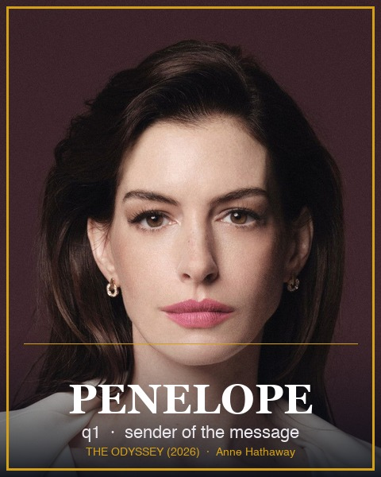
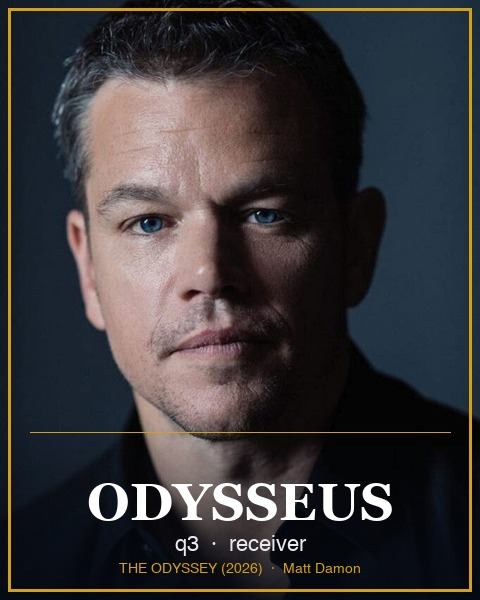

Play / pause / step through the protocol and watch the exact three-qubit
state (q1 = Penelope's message, q2 = Penelope's Bell half, q3 = Odysseus's Bell half). Set the
unknown state |ψ⟩ = cos(θ/2)|0⟩ + e^{iφ} sin(θ/2)|1⟩ and choose Penelope's measurement outcome.
|ψ⟩ = Penelope's outcome (m₁m₂):

Penelope — q1 sender, holds |ψ⟩
|ψ⟩
share a Bell pair

Odysseus — q3 receiver
|ψ⟩
The film's leads in The Odyssey (2026),
dir. Christopher Nolan: Anne Hathaway (Penelope) and Matt Damon (Odysseus).
Portrait photos via themoviedb.org; rebuild the cards with
animations/make_portraits.py.